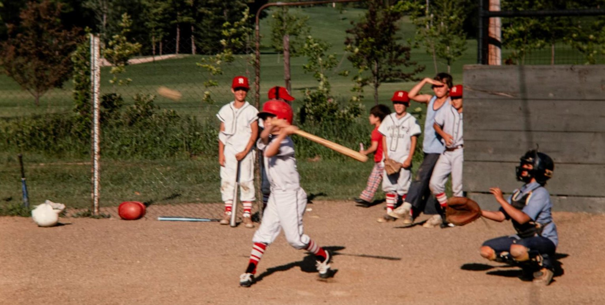

If the work helps people, it may qualify
Free ads are for charities, volunteer groups and community projects of every size. You do not need a budget or a marketing person to apply.
The causes we put on the air
Every one of these can apply today. If you are not sure where your group fits, apply anyway and tell us what you do.


Who can apply
Registered charities
Any group with 501(c)(3) status, from a food bank to a free clinic to an animal rescue.
Public safety volunteers
Volunteer fire companies, ambulance squads and search and rescue teams that need members or donations.
Schools and public programs
Public schools, libraries, parks and local government programs with something to tell the community.
Unpaid community groups
A youth league, a neighborhood cleanup or a coat drive qualifies without any paperwork.
One person with a public message
A parent promoting a school fundraiser, or a neighbor asking drivers to slow down near the playground.
Not sure?
Apply and tell us what you do. We read every application and reply by email.
What the ad can ask for
We air ads that
- Ask people to give, volunteer or attend
- Tell people about a free or low-cost service
- Share safety or educational information
- Name the cause and how to reach it
We do not air
- Anything that promotes a business, a product or a paid service
- Anything for or against a candidate, a party or a ballot question
- Fundraising for one person's private benefit, unless a registered charity manages the money
- False claims, adult content, or anything unlawful to broadcast
Three voices that would qualify
A mother near the elementary school
She wants drivers to slow down at drop-off, and she can ask the whole town in her own words.
A food pantry with full shelves
It has more food than visitors, and it can tell every family nearby when the doors are open.
A volunteer fire company
It is short on members, and it can recruit across its own zip codes without spending a dollar of its budget.
Get on the list
When you apply, you join our waiting list, and sponsors choose the causes they want to put on the air.
Apply for a free ad How it works